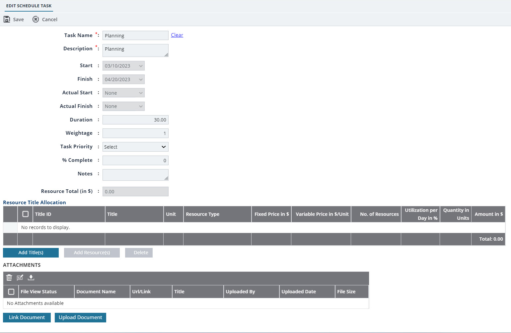
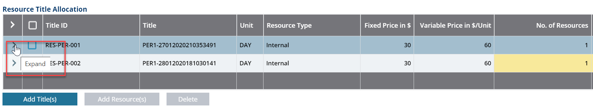

You can assign personnel titles and add a specific person to each task through the project's schedule. You can then modify certain information of personnel, such as number of resources and the utilization per day. This action is very similar to allocating resources to a project.
In the module menu, click Projects.
The PROJECTS list page is displayed.
In the list page, click the appropriate project, and then click View.
In the navigation pane, expand the project folder, and then click Schedule.
The SCHEDULE page is displayed.
To enter resource information, click the appropriate task, and then click Edit.
The EDIT SCHEDULE TASK page is displayed. Figure 1. Edit Schedule Task
In the Resource Title Allocation section, perform the following steps to add a title:
Click Add Title(s).
The Title(s) dialog box is displayed.
Available options are titles defined in the Resource Titles catalog of the library.
Select the appropriate titles, and then click Select.
The selected titles are added to the Resource Title Allocation section.
Note: You can modify information in the highlighted columns.
In the No. of Resources column, click in the appropriate row, and then enter the number of resources required for the title.
You can either enter the Utilization per Day in % or Quantity in Units values. Masterworks automatically calculates and displays the other value. For example, if you enter the Quantity in Units value, the Utilization per Day in % value is automatically calculated and displayed.
Perform either of the following steps:
In the Utilization per Day in % box, enter the utilization, in percentage value, of the title for a task. The Quantity in Units value is calculated and displayed.
Calculation of Quantity in Units when you enter Utilization per Day in %.
Unit
Calculation of Quantity in Units
Hours
Q = U% x [(No. of working hours per day) x (D1 + D2 +… Dn)]
Days
Q = U% x [(D1+ D2 + … Dn)]
Months
Q = U% x [(D1/M1) + (D2/M2) + … (Dn /Mn)]
Years
Q = U% x [(D1/ T1) + (D2/ T2) + … (Dn/ Tn)]
Where,
Abbreviations used in Calculations
Description
U %
Utilization per Day in % as specified.
No. of working hours per day
The number of working hours per day as specified in the Personnel catalog of the library for the title
D1, D2, … Dn
Number of working days in each year within the duration.
M1, M2, … Mn
Number of working days in each month within the duration.
T1, T2, … Tn
Number of working days per year within the duration.
(D1/M1), (D2/M2), … (Dn/Mn)
Duration in months, for each month.
(D1/ T1), (D2/ T2), … (Dn/ Tn)
Duration in years, for each year.
In the Quantity in Units box, enter the quantity in units of the title for the task for the corresponding unit.The Utilization per Day in %value is calculated and displayed.
Calculation of Utilization per Day in % when you enter Quantity in Units.
Unit
Calculation of Utilization per Day in %
Hours
U% = Q / [(No. of working hours per day) x (D1+ D2 +… Dn)]
Days
U% = Q / [(D1 + D2 +… Dn)]
Months
U% = Q / [ (D1/M1 + D2/M2 + … Dn /Mn)]
Years
U% = Q / [ (D1/ T1) + (D2/ T2) + … (Dn/ Tn)]
Where,
Abbreviations used in Calculations
Description
Q
Quantity in Units as specified.
No. of working hours per day
The number of working hours per day as specified in the Personnel catalog of the library for the title.
D1, D2, … Dn
Number of working days in each year within the duration.
M1, M2, … Mn
Number of working days in each month within the duration.
T1, T2, … Tn
Number of working days per year within the duration.
(D1/M1), (D2/M2), … (Dn/Mn)
Duration in months, for each month.
(D1/ T1), (D2/ T2), … (Dn/ Tn)
Duration in years, for each year.
Note: An alert message is displayed when a role is over-utilized or overlaps with any other project, but you can continue to assign the over-allocated person to a title.
The Amount in $ for the title is calculated as follows.
Amount in $ = [N' (Fixed Price + (Variable Price x Quantity in Units))] + Sum of (Amount from each person associated with the title)
Where,
N' = (Number of resources) – (Number of associated persons)
If N' is less than zero, then N' is considered as 0 value.
In the Resource Title Allocation section, perform the following steps to add personnel to the selected title:
Select the appropriate title and click Add Resource(s).
The Select Resource(s) dialog box is displayed.
Available options are the personnel information defined in the Resource Titles catalog of the library for the selected title.
Select the appropriate personnel, and then click Select.
The selected personnel are added to the Resource Title Allocation section for the selected title.
Note: You can assign multiple personnel to a title, regardless of the number of resources defined for a title in the No. of Resources column.
Figure 2. Resource Title Allocation
You can either enter the Utilization per Day in % or Quantity in Units values. The system automatically calculates and displays the other value.
For example, if you enter the Quantity in Units value, the system calculates and displays the Utilization per Day in % value.
Perform either of the following steps.
In the Utilization per Day in % box, enter the utilization, of the person in percentage value for the task.
The Quantity in Units value is calculated and displayed.
Calculation of Quantity in Units when you enter Utilization per Day in %:
Unit
Calculation of Utilization per Day in %
Hours
U% = Q / [(No. of working hours per day) x (D1+ D2 +… Dn)]
Days
U% = Q / [(D1 + D2 +… Dn)]
Months
U% = Q / [ (D1/M1 + D2/M2 + … Dn /Mn)]
Years
U% = Q / [ (D1/ T1) + (D2/ T2) + … (Dn/ Tn)]
Where,
Abbreviations used in Calculations
Description
U %
Utilization per Day in % as specified.
No. of working hours per day
The number of working hours per day as specified in the Resource Titles catalog of the library for the title.
D1, D2, … Dn
Number of working days in each year within the duration.
M1, M2, … Mn
Number of working days in each month within the duration.
T1, T2, … Tn
Number of working days per year within the duration.
(D1/M1), (D2/M2), … (Dn/Mn)
Duration in months, for each month.
(D1/ T1), (D2/ T2), … (Dn/ Tn)
Duration in years, for each year.
In the Quantity in Units box, enter the quantity in units of the title for the task for the corresponding unit.
The Utilization per Day in % value is calculated and displayed.
Calculation of Utilization per Day in % when you enter Quantity in Units.
Unit
Calculation of Utilization per Day in %
Hours
U% = Q / [(No. of working hours per day) x (D1+ D2 +… Dn)]
Days
U% = Q / [(D1 + D2 +… Dn)]
Months
U% = Q / [(D1/M1) + (D2/M2) + … (Dn /Mn)]
Years
U% = Q / [(D1/ T1) + (D2/ T2) + … (Dn/ Tn)]
Where,
Abbreviations used in Calculations
Description
Q
Quantity in Units as specified.
No. of working hours per day
The number of working hours per day as specified in the Enterprise Resource Directory catalog of the library for the personnel.
D1, D2, … Dn
Number of working days in each year within the duration.
M1, M2, … Mn
Number of working days in each month within the duration.
T1, T2, … Tn
Number of working days per year within the duration.
(D1/M1), (D2/M2), … (Dn/Mn)
Duration in months, for each month.
(D1/ T1), (D2/ T2), … (Dn/ Tn)
Duration in years, for each year.
Note: An alert message is displayed when a person is over-utilized or overlaps with any other project, but you can continue to assign the over-allocated person to a title.
The Amount in $ for a person is calculated as follows.
Amount in $ = [Fixed Price + (Variable Price x Quantity in Units).
Optionally, to delete personnel or titles, select the appropriate rows, and then click Delete.
Click Save.
Based on the configuration defined in the Show Resource Name in schedule component in the Feature Settings page of the Administration module, the SCHEDULE list page displays either the user name or the user role in the Resources column.